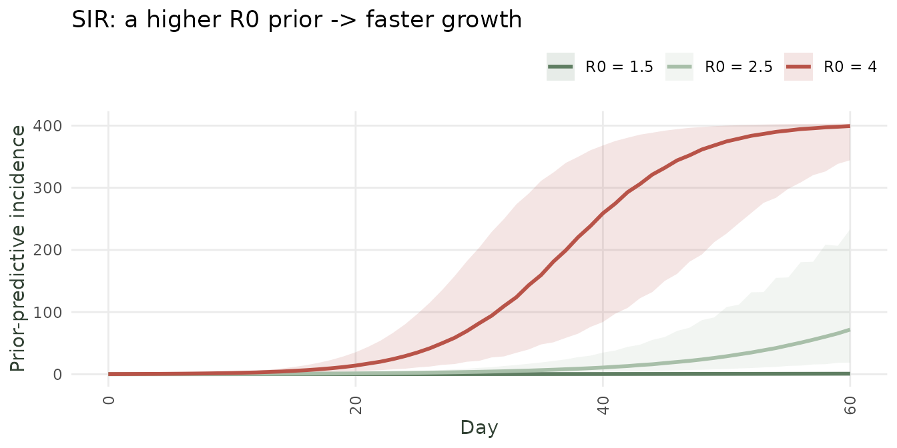
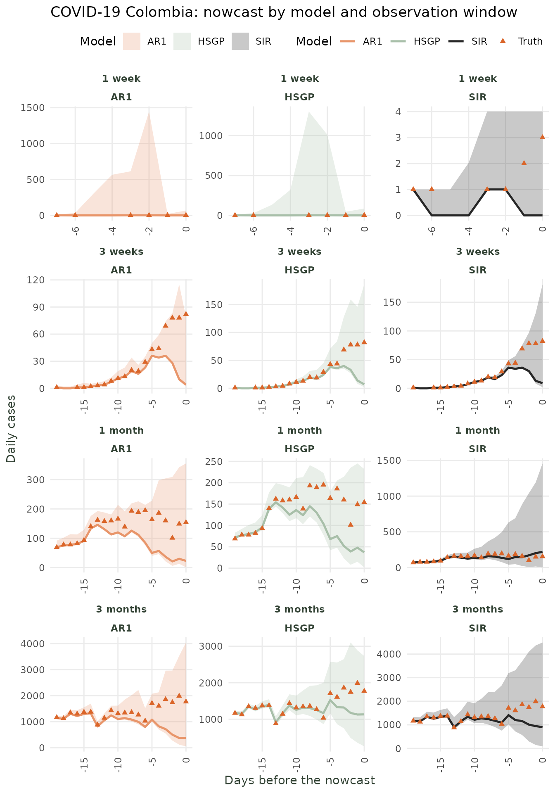

Nowcasting at the Start of an Epidemic
diseasenowcasting team
Source:vignettes/Nowcasting_at_the_start_of_an_Epidemic.Rmd
Nowcasting_at_the_start_of_an_Epidemic.RmdTL;DR
Use SIR model with strong priors for 1-2 weeks (if data is daily) or 1-3 months (if data is weekly). Use
prior_onlyto experiment with the priors for plausible curves.Use default AR model for 3-4 weeks (if data is daily) or 4-7 months (if data is weekly).
Use AR/HGSP for anything between 1-3 months (if data is daily) or 7 months to 1 year (if data is weekly).
Use HGSP for long epidemic measurements 3+ months (if data is daily) or 1 year (if data is weekly).
The challenge: few data points
Nowcasting at the very start of an epidemic is different from nowcasting during a well-established outbreak. When only a handful of cases have been reported, the data are almost completely uninformative about the future trajectory and the model’s priors dominate.
This vignette shows you:
- How to set each models priors (SIR, AR1, HSGP) at the start of an epidemic.
- How the three models perform on the COVID-19 Colombia data as the series grows from 1 day to 3 months.
- A practical heuristic for deciding when to switch across the models.
0) Prelude: Data preparation
For this example we use the covid_colombia dataset. This
contains case counts for all COVID-19 cases registered in Colombia by
notification and diagnosis dates.
tn_covid <- tbl_now(
covid_colombia,
event_date = notification_date,
report_date = diagnosis_date,
case_count = n,
data_type = "count-incidence",
t_effects = temporal_effects(day_of_week = TRUE))We will also get the final reported cases to compare against later:
#Also get the final reports
final_report <- tn_covid |>
get_latest_reported_cases() 1) Prior choices at the start of an epidemic
1.1 The SIR model: mechanistic priors
When data are scarce, the mechanistic susceptible-infected-recovered (SIR) model is best as it imposes structural constraints:
R0 (basic reproductive number): The basic reproductive number, represents the expected number of cases generated by one initial infectious case in a population. Alongside societal behaviour, it is related to the disease’s biology and can be approximated from the literature, from epidemiological case studies or scientifically informed assumptions.
gamma (recovery rate): the recovery rate is the inverse of the infectious period (\gamma = 1 / \text{infectious period}). The infectious period can be thought of as how long a host maintains the capacity to transmit the disease to others. This can also be approximated from the literature or scientific assumptions.
Note For consistency, the units have to be identical to the units in the data. That is if data is weekly then the infectious period used to calculate the recovery rate should also be in weeks.
N_eff: The effective susceptible population. That is, the proportion of individuals that can get infected. At the beginning of an outbreak in a completely susceptible population this value is close to 1. If part of the population is vaccinated this should be close to
1 - proportion vaccinated. A closely related value that can also be used initially is the expected attack rate.N_pop: The total size of the population. That is, how many people are there (including the non-susceptible).
# SIR priors for a COVID-19 outbreak
# Assumptions reflect data known in 2020
sir_model <- model(
likelihood = nb_likelihood(),
epidemic = sir_epidemic(
R0 = lognormal_prior(log(2.5), 0.1), # R0 ~ 2.5. Sd very tight.
gamma = lognormal_prior(log(1/14), 0.1), # infectious ~ 14 days / tight sd
N_eff = beta_prior(5, 2), # ~70% susceptible initially
N_pop = 50000000 # ~population of Colombia
),
delay = lognormal_delay(
mu = normal_prior(log(5), 0.5), # mean report delay ~5 days
sigma = gamma_prior(2, 0.5) # delay SD
)
)Note that we are specifying the values of the SIR epidemic process
with a lot of certainty (sdlog = 0.1) as strong priors are
required to avoid broad prediction intervals. Even with just 1-5 data
points, the SIR model can produce a plausible forecast because
the epidemic shape is constrained by the mechanistic structure.
1.2 The AR(1) model: trend priors
The AR(1) model places a prior on the trend rather than on epidemiological parameters.
ar_phi reflects how much yesterday’s values influence today’s (initially set close to 1 to use yesterday as today’s prediction).
ar_sigma represents how fast you expect the trend to change.
ar1_model <- model(
nb_likelihood(),
ar1_epidemic(
phi = normal_prior(0.9, 0.1), # expect persistent growth
sigma = exponential_prior(100) # low innovation noise
),
delay = lognormal_delay(
mu = normal_prior(log(5), 0.5), # mean delay ~5 days
sigma = gamma_prior(2, 0.5) # delay SD
)
)Caveat: AR(1) needs at least 10-15 data points to estimate the trend reliably. With fewer, it collapses toward the intercept prior.
1.3 The HSGP model: kernel priors
The HSGP is the most flexible model but the least informative a priori. Its priors control:
gp_alpha: How large the trend can swing (amplitude). Start narrow.
gp_ell: How fast the trend can change (length-scale). Longer = smoother.
hsgp_model <- model(
nb_likelihood(),
hsgp_epidemic(
alpha = half_normal_prior(0, 1),
ell = inv_gamma_prior(3, 1)
),
delay = lognormal_delay(
mu = normal_prior(log(5), 0.5), # mean delay ~5 days
sigma = gamma_prior(2, 0.5) # delay SD
)
)The HSGP requires the most data to be reliable. With < 20-30 observations, it tends to produce very wide intervals that offer little guidance.
2) Experiments with the prior: prior-predictive simulation
To know that a prior is sensible you can **simulate from it before
fitting via the prior_only option. Setting
nowcast(..., prior_only = TRUE) ignores the data likelihood
and draws the epidemic parameters solely from the priors, returning the
prior-predictive epidemic curves. This lets you see what a
prior implies, and is the best way to calibrate the strong priors you
need early in an outbreak.
The function call is very simple you just set up a nowcast with the
option prior_only = TRUE:
nowcast(data = tn_covid, prior_only = TRUE) The following example show how slightly moving different parameters generates different prior processess:
2.1) SIR – moving R0.
The reproduction numbe R0 controls how fast and how big
the epidemic is. Here we loop through three different R0
values showing how a higher R0 translates into faster
growth.
#Loop through different values for R0
model_list <- list(); k <- 0
for (R0val in c(1.5, 2.5, 4.0)){
k <- k + 1
#Create a nowcast
ncast <- nowcast(data = tn_covid,
model = model(
epidemic = sir_epidemic(
R0 = lognormal_prior(log(R0val), 0.05), #<- Change
gamma = lognormal_prior(log(1/14), 0.1),
N_eff = beta_prior(5, 2),
N_pop = 50000000
)
),
now = as.Date("2020/05/01"),
n_draws = 300,
prior_only = TRUE)
#Get the quantiles
q <- quantile(ncast, probs = c(0.05, 0.5, 0.95))
model_list[[k]] <- data.frame(day = seq_len(nrow(q)) - 1L,
lo = q[, 1], med = q[, 2], hi = q[, 3],
scenario = paste0("R0 = ", R0val))
}
sir_df <- dplyr::bind_rows(model_list)
ggplot(sir_df, aes(day, med, colour = scenario, fill = scenario)) +
geom_ribbon(aes(ymin = lo, ymax = hi), alpha = 0.15, colour = NA) +
geom_line(linewidth = 1) +
labs(x = "Day", y = "Prior-predictive incidence", colour = NULL, fill = NULL,
title = "SIR: a higher R0 prior -> faster growth") +
scale_color_manual(values = unname(dn_palette(3))) +
scale_fill_manual(values = unname(dn_palette(3))) +
theme_diseasenowcasting()
Prior-predictive epidemic from the SIR model under three R0 priors (median + 90% band).
The take-away: experiment with the prior via
prior_only = TRUEuntil the simulated curves look like epidemics you consider plausible, then fit to data.
2) COVID-19 Colombia: example from 1 day to 3 months
2.2 Fitting each model across the five windows
We fit SIR, AR1, and HSGP at each window using tight, epidemiologically informed priors for early windows and relaxing them as data accumulate.
# Starting date and progressive windows
t0 <- as.Date("2020-03-09") # first day with >0 cases in all models
windows <- list(
`1 week` = t0,
`2 weeks` = t0 + 6,
`3 weeks` = t0 + 13,
`4 weeks` = t0 + 20,
`1 month` = t0 + 29,
`2 months` = t0 + 59,
`3 months` = t0 + 89
)
results_list <- list()
for (win_name in names(windows)) {
now <- windows[[win_name]]
for (epi_name in c("SIR", "AR1", "HSGP")) {
mdl <- switch(epi_name,
SIR = sir_model,
AR1 = ar1_model,
HSGP = hsgp_model
)
ncast <- nowcast(tn_covid, mdl, now = now)
df_predictions <- summary(predict(ncast))
#Add some information
df_predictions <- df_predictions |>
mutate(now = !!now) |>
mutate(window = !!win_name) |>
mutate(epidemic = !!epi_name) |>
left_join(final_report, by = join_by(.event_num)) |>
collect()
#Return to list
results_list[[length(results_list)+1]] <- df_predictions |>
filter(event_date >= now - 20)
}
}
#Join all the models
all_results <- dplyr::bind_rows(results_list)
#Print the results
all_results <- all_results |>
mutate(window = factor(all_results$window, levels = names(windows)))2.3 Comparing the three models across windows
Thw following shows all the nowcasted values alongside the final truth. Initially the SIR outperforms AR(1) and HGSP. As more data arrives HGSP takes over while the SIR model eventually blows up.
# Plot only the last 20 event-times of each window (most relevant)
plot_data <- all_results |>
group_by(window, epidemic) |>
filter(!is.na(median)) |>
arrange(.event_num) |>
slice_tail(n = 20) |>
ungroup() |>
mutate(days_to_nowcast = event_date - now)
ggplot(plot_data, aes(x = days_to_nowcast)) +
geom_ribbon(aes(ymin = q2.5, ymax = q97.5, colour = epidemic,
fill = epidemic), alpha = 0.25, colour = NA) +
geom_line(aes(y = median, colour = epidemic, fill = epidemic),
linewidth = 0.9) +
geom_point(aes(y = n, colour = "Truth"), linewidth = 0.9, shape = 17) +
scale_colour_manual(
values = c(SIR="#262626", AR1="#E8956A", HSGP="#A8BFA9", Truth = "#DA6529")
) +
scale_fill_manual(
values = c(SIR="#262626", AR1="#E8956A", HSGP="#A8BFA9", Truth = "#DA6529")
) +
facet_wrap(window ~ epidemic, ncol = 3, scales = "free") +
labs(x = "Days before the nowcast", y = "Daily cases",
colour = "Model", fill = "Model",
title = "COVID-19 Colombia: nowcast by model and observation window") +
theme_diseasenowcasting()
Nowcast (median + 90% CI) for each epidemic model at five progressive observation windows.
3) Conclusion: When to fit what?
| Daily data observation period | Weekly data observation period | Recommended model | Key priors to set |
|---|---|---|---|
| 1-2 weeks | 1-3 months | SIR | R0, gamma, N_eff, N_pop |
| 3-4 weeks | 4-7 months | SIR / AR1 / HGSP | ar_phi, ar_sigma |
| 1-3 months | 7-12 months | AR1 / HSGP | default priors usually adequate |
| 3 months or more | 1 year or more | HSGP | default priors usually adequate |
The transition from mechanistic to data-driven models should mirror the evolution of epidemiological knowledge during an outbreak: at the start, you rely on prior knowledge; as data accumulate, you let the data speak.